Navigation design basics for Windows apps
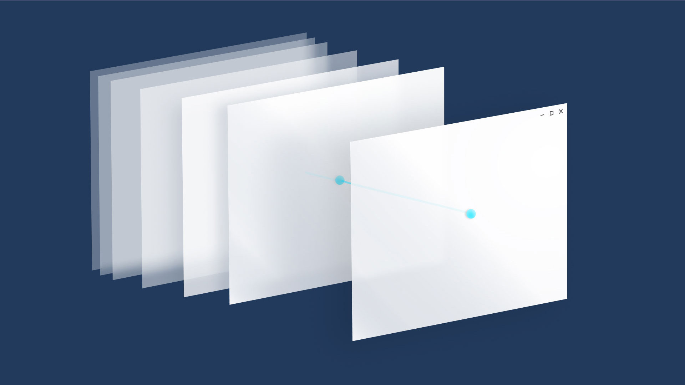
If you think of an app as a collection of pages, navigation describes the act of moving between pages and within a page. It's the starting point of the user experience, and it's how users find the content and features they're interested in. It's very important, and it can be difficult to get right.
You have a huge number of choices to make for navigation. You could:
Require users to go through a series of pages in order.
Provide a menu that allows users to jump directly to any page.
Place everything on a single page and provide filtering mechanisms for viewing content.
While there's no single navigation design that works for every app, there are principles and guidelines to help you decide the right design for your app.
Principles of good navigation
Let's start with the basic principles of good navigation design:
- Consistency: Meet user expectations.
- Simplicity: Don't do more than you need to.
- Clarity: Provide clear paths and options.
Consistency
Navigation should be consistent with user expectations. Using standard controls that users are familiar with and following standard conventions for icons, location, and styling will make navigation predictable and intuitive for users.
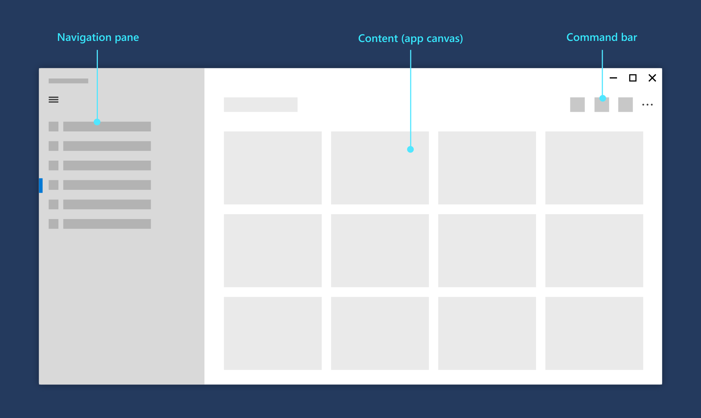
Users expect to find certain UI elements in standard locations.
Simplicity
Fewer navigation items simplify decision making for users. Providing easy access to important destinations and hiding less important items will help users get where they want, faster.
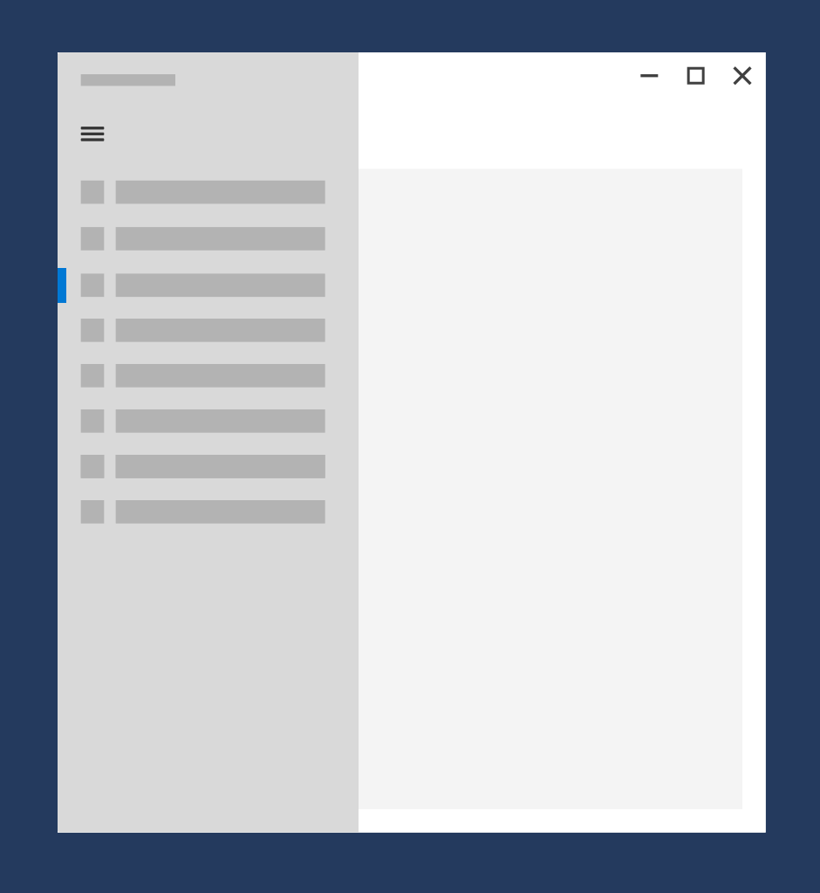
Present navigation items in a familiar navigation menu.
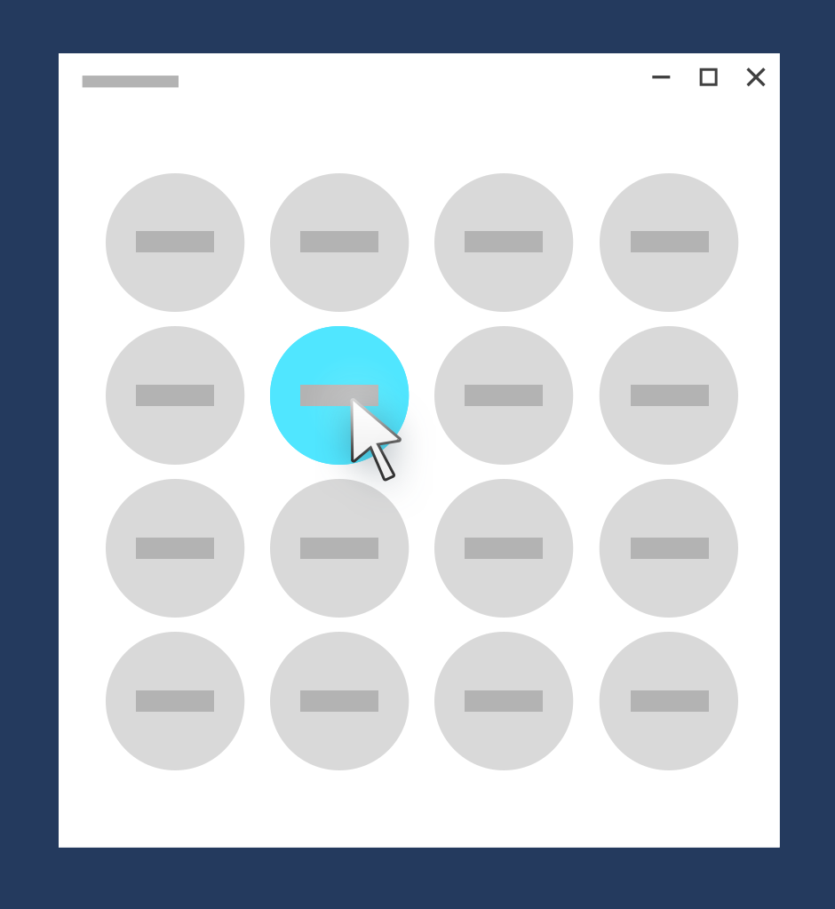
Don't overwhelm users with many navigation options.
Clarity
Clear paths allow for logical navigation for users. Making navigation options obvious and clarifying relationships between pages should prevent users from getting lost.
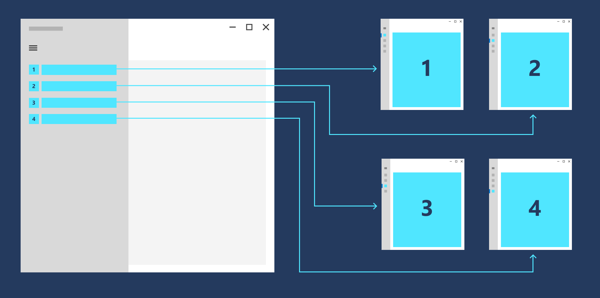
Destinations are clearly labeled so users know where they are.
General recommendations
Now, let's take our design principles--consistency, simplicity, and clarity--and use them to come up with some general recommendations.
- Think about your users. Trace out typical paths they might take through your app, and for each page, think about why the user is there and where they might want to go.
- Avoid deep navigation hierarchies. If you go beyond two levels of navigation, provide a breadcrumb bar that shows the user where they are and let's them quickly get back out. Otherwise, you risk stranding your user in a deep hierarchy that they will have difficulty leaving.
- Avoid "pogo-sticking." Pogo-sticking occurs when there is related content, but navigating to it requires the user to go up a level and then down again.
Use the right structure
Now that you're familiar with general navigation principles, how should you structure your app? There are two general structures: flat and hierarchal.
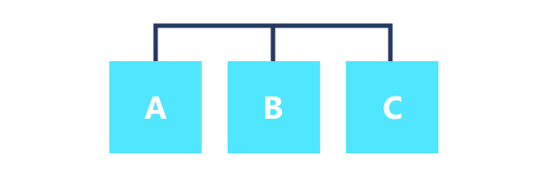
Flat/lateral
In a flat/lateral structure, pages exist side-by-side. You can go from one page to another in any order.
We recommend using a flat structure when:
- The pages can be viewed in any order.
- The pages are clearly distinct from each other and don't have an obvious parent/child relationship.
- There are less than 8 pages in the group.
(When there are more pages, it might be difficult for users to understand how the pages are unique or to understand their current location within the group. If you don't think that's an issue for your app, go ahead and make the pages peers. Otherwise, consider using a hierarchical structure to break the pages into two or more smaller groups.)
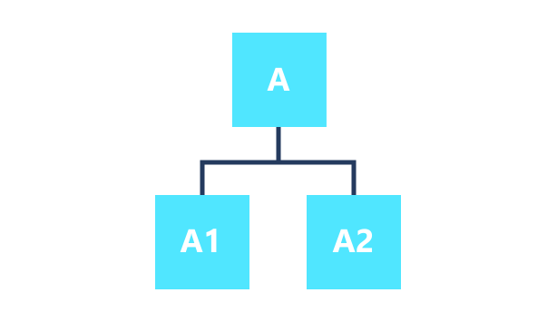
Hierarchical
In a hierarchical structure, pages are organized into a tree-like structure. Each child page has one parent, but a parent can have one or more child pages. To reach a child page, you travel through the parent.
Hierarchical structures are good for organizing complex content that spans lots of pages. The downside is some navigation overhead: the deeper the structure, the more clicks it takes to get from page to page.
We recommend a hierarchical structure when:
- Pages should be traversed in a specific order.
- There is a clear parent-child relationship between pages.
- There are more than 7 pages in the group.
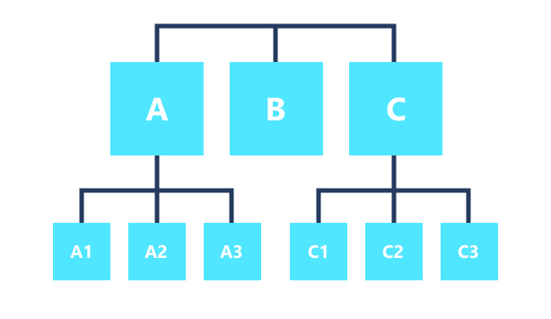
Combining structures
You don't have to choose one structure or the other; many well-designed apps use both. An app can use flat structures for top-level pages that can be viewed in any order, and hierarchical structures for pages that have more complex relationships.
If your navigation structure has multiple levels, we recommend that peer-to-peer navigation elements only link to the peers within their current subtree. Consider the adjacent illustration, which shows a navigation structure that has two levels:
- At level 1, the peer-to-peer navigation element should provide access to pages A, B, and C.
- At level 2, the peer-to-peer navigation elements for the A2 pages should only link to the other A2 pages. They should not link to level 2 pages in the C subtree.
Use the right controls
Once you've decided on a page structure, you need to decide how users navigate through those pages. XAML provides a variety of navigation controls to help ensure a consistent, reliable navigation experience in your app.
With few exceptions, any app that has multiple pages uses a frame. Typically, an app has a main page that contains the frame and a primary navigation element, such as a navigation view control. When the user selects a page, the frame loads and displays it.
Displays a horizontal list of links to pages at the same level. The NavigationView control implements the top navigation pattern.
Use top navigation when:
- You want to show all navigation options on the screen.
- You desire more space for your app's content.
- Icons cannot clearly describe your navigation categories.
Displays a horizontal set of tabs and their respective content. The TabView control is useful for displaying several pages (or documents) while giving the user the capability to rearrange, open, or close tabs.
Use tabs when:
- You want users to be able to dynamically open, close, or rearrange tabs.
- You expect that there might be a large number of tabs open at once.
- You expect users to be able to easily move tabs between windows in your application that use tabs, similar to web browsers like Microsoft Edge.
Displays a horizontal list of links to pages at each of the higher levels. The BreadcrumbBar control implements the top navigation pattern.
Use a breadcrumb when:
- You want to show the path to the current location
- You have many levels of navigation
- You expect users to be able to return to any previous level
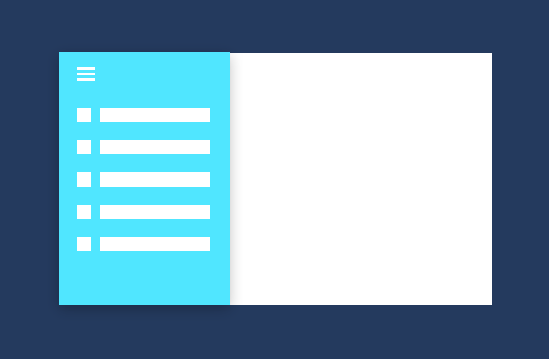
Displays a vertical list of links to top-level pages. Use when:
- The pages exist at the top level.
- There are many navigation items (more than 5)
- You don't expect users to switch between pages frequently.
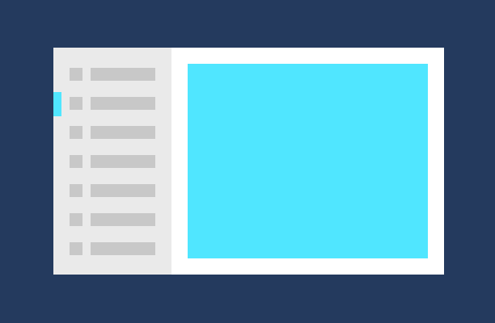
Displays a list of items. Selecting an item displays its corresponding page in the details section. Use when:
- You expect users to switch between child items frequently.
- You want to enable the user to perform high-level operations, such as deleting or sorting, on individual items or groups of items, and also want to enable the user to view or update the details for each item.
List/details is well suited for email inboxes, contact lists, and data entry.
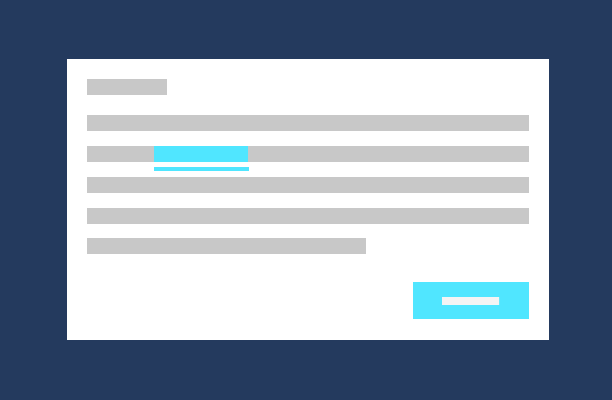
Embedded navigation elements can appear in a page's content. Unlike other navigation elements, which should be consistent across the pages, content-embedded navigation elements are unique from page to page.
Guidelines for custom back navigation behavior
If you choose to provide your own back stack navigation, the experience should be consistent with other apps. We recommend that you follow the following patterns for navigation actions:
| Navigation action | Add to navigation history? |
|---|---|
| Page to page, different peer groups | Yes
In this illustration, the user navigates from level 1 of the app to level 2, crossing peer groups, so the navigation is added to the navigation history. 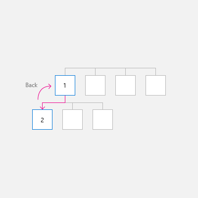 In the next illustration, the user navigates between two peer groups at the same level, again crossing peer groups, so the navigation is added to the navigation history. 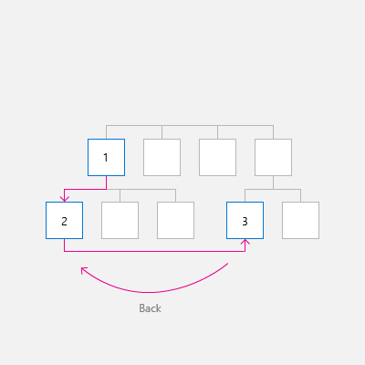 |
| Page to page, same peer group, no on-screen navigation element
The user navigates from one page to another with the same peer group. There is no on-screen navigation element (such as NavigationView) that provides direct navigation to both pages. |
Yes
In the following illustration, the user navigates between two pages in the same peer group, and the navigation should be added to the navigation history. 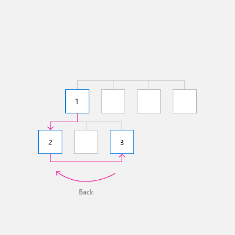 |
| Page to page, same peer group, with an on-screen navigation element
The user navigates from one page to another in the same peer group. Both pages are shown in the same navigation element, such as NavigationView. |
It depends
Yes, add to the navigation history, with two notable exceptions. If you expect users of your app to switch between pages in the peer group frequently, or if you wish to preserve the navigational hierarchy, then do not add to the navigation history. In this case, when the user presses back, go back to the last page before the user navigated to the current peer group. 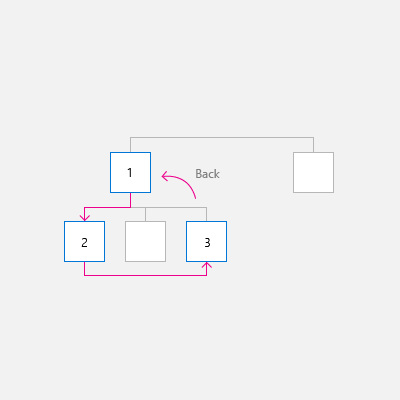 |
| Show a transient UI
The app displays a pop-up or child window, such as a dialog, splash screen, or on-screen keyboard, or the app enters a special mode, such as multiple selection mode. |
No
When the user presses the back button, dismiss the transient UI (hide the on-screen keyboard, cancel the dialog, etc) and return to the page that spawned the transient UI. 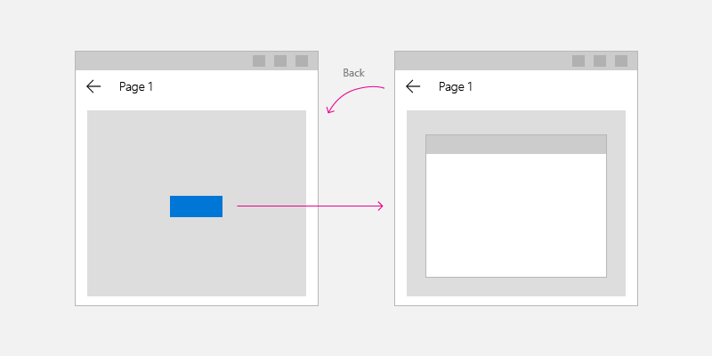 |
| Enumerate items
The app displays content for an on-screen item, such as the details for the selected item in list/details list. |
No
Enumerating items is similar to navigating within a peer group. When the user presses back, navigate to the page that preceded the current page that has the item enumeration. 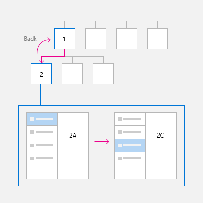 |
Next: Add navigation code to your app
The next article, Implement basic navigation, shows the code required to use a Frame control to enable basic navigation between two pages in your app.